Downloads
Combined PNG ZIP (JEE first)
JEE PNG ZIP
Olympiad PNG ZIP
Combined PDF (bookmarked)
JEE PDF (bookmarked)
Olympiad PDF (bookmarked)
Printing: A4 portrait, one sheet per page, Fit (not Fill/Crop). Every PNG is already exact A4 proportion at 300 DPI (2480×3508).
Part I — JEE Main + Advanced (8 sheets)

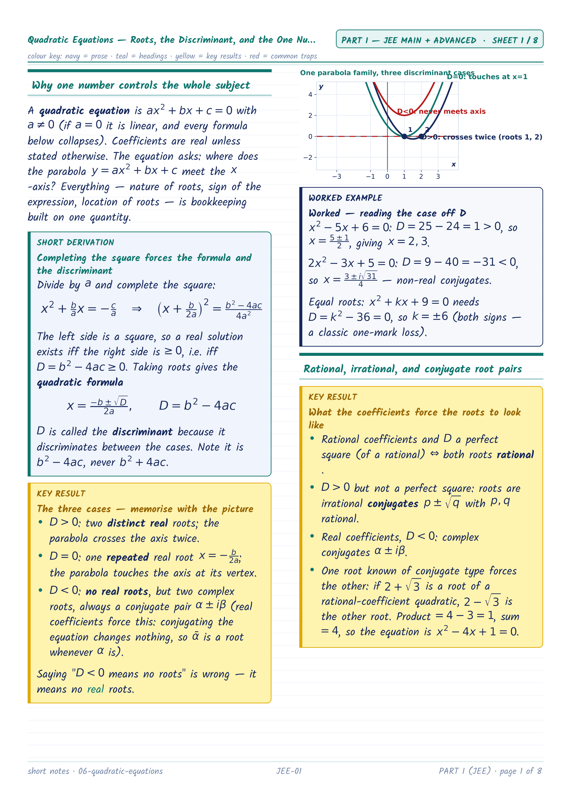
JEE-01 — Quadratic Equations — Roots, the Discriminant, and the One Number That Decides Everything
Quadratic Equations — Roots, the Discriminant, and the One Number That Decides Everything
Quadratic Equations — Roots, the Discriminant, and the One Number That Decides Everything

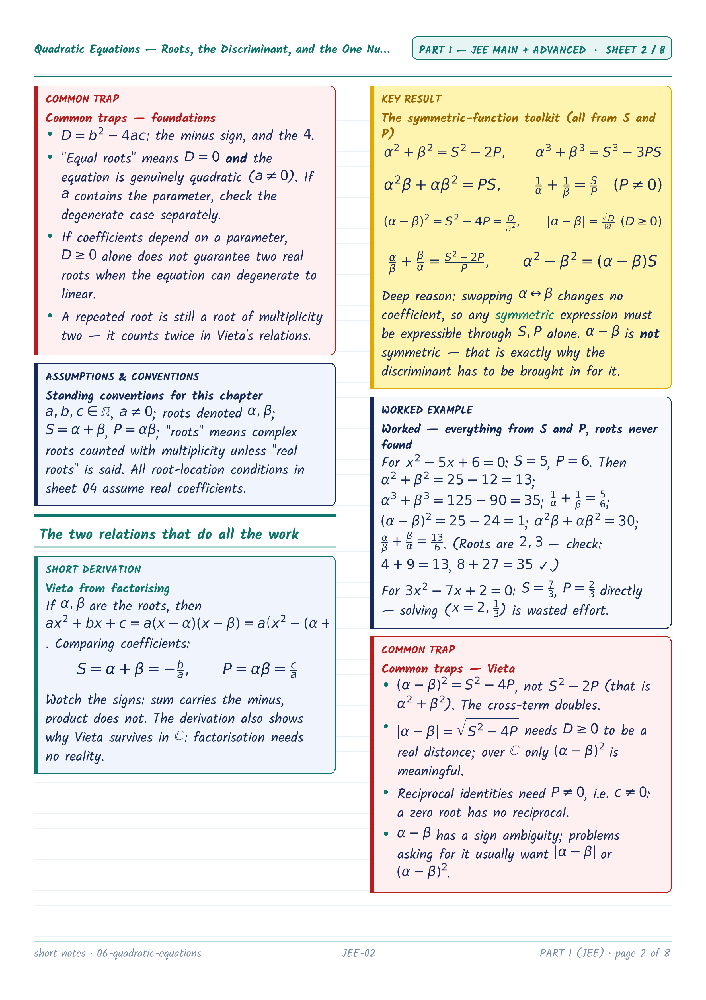
JEE-02 — Quadratic Equations — Roots, the Discriminant, and the One Number That Decides Everything (cont.)
Quadratic Equations — Roots, the Discriminant, and the One Number That Decides Everything
Quadratic Equations — Roots, the Discriminant, and the One Number That Decides Everything

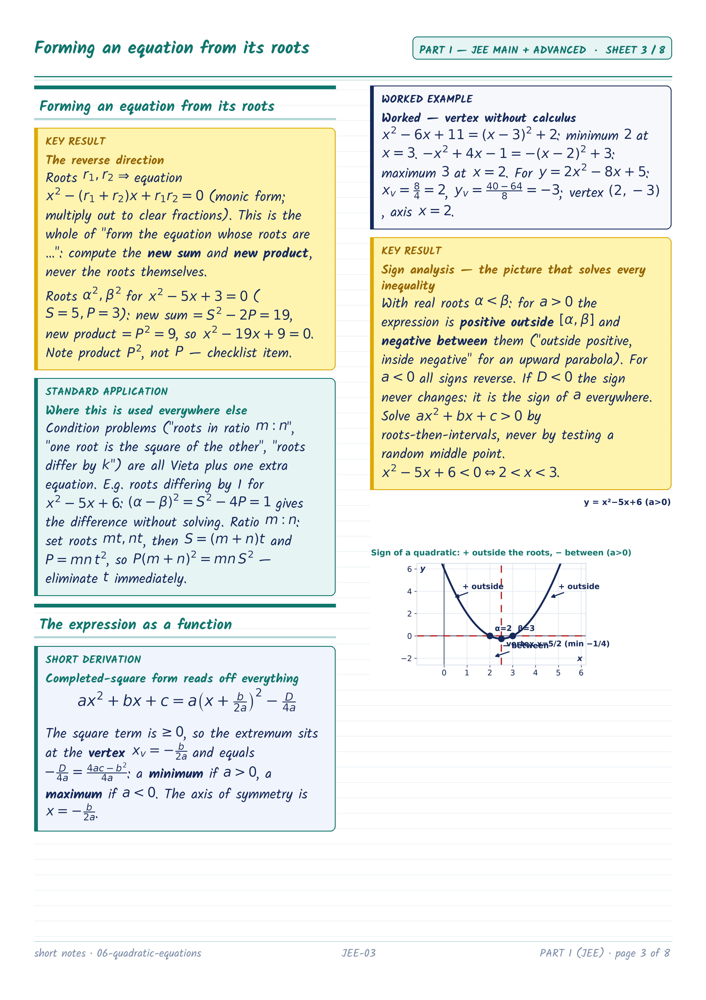
JEE-03 — Forming an equation from its roots
Vieta's Relations and Symmetric Functions — Never Solve for the Roots
Vieta's Relations and Symmetric Functions — Never Solve for the Roots

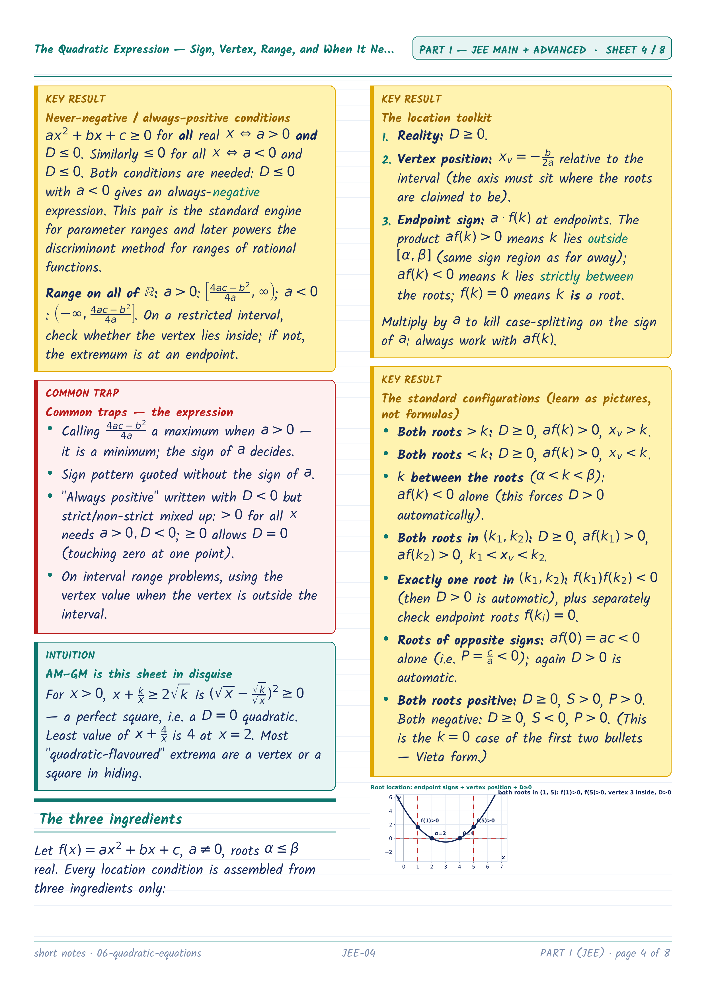
JEE-04 — The Quadratic Expression — Sign, Vertex, Range, and When It Never Changes Sign (cont.)
The Quadratic Expression — Sign, Vertex, Range, and When It Never Changes Sign
The Quadratic Expression — Sign, Vertex, Range, and When It Never Changes Sign

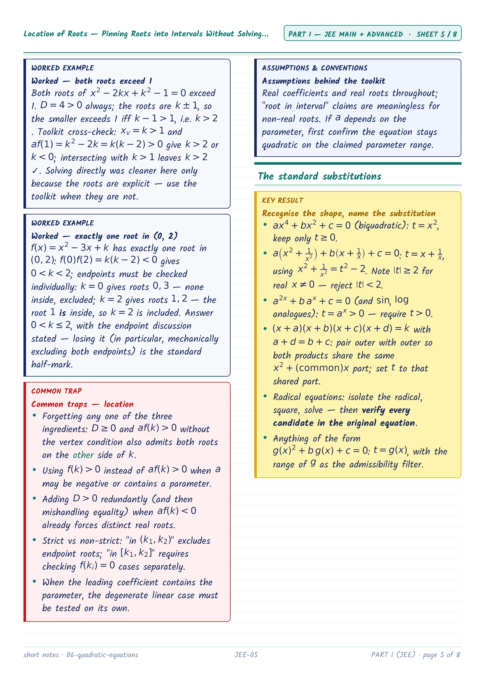
JEE-05 — Location of Roots — Pinning Roots into Intervals Without Solving (cont.)
Location of Roots — Pinning Roots into Intervals Without Solving
Location of Roots — Pinning Roots into Intervals Without Solving

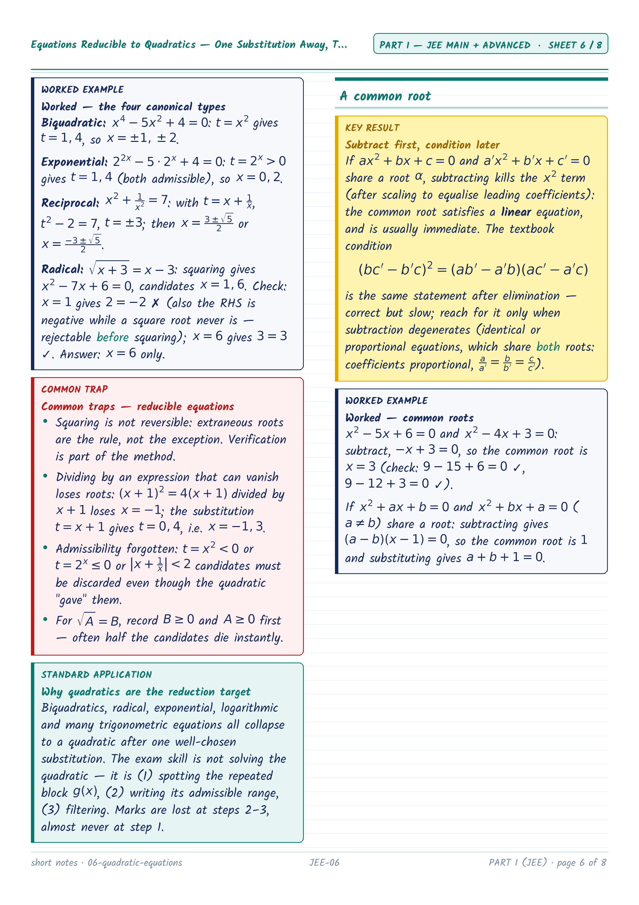
JEE-06 — Equations Reducible to Quadratics — One Substitution Away, Then Verify (cont.)
Equations Reducible to Quadratics — One Substitution Away, Then Verify
Equations Reducible to Quadratics — One Substitution Away, Then Verify

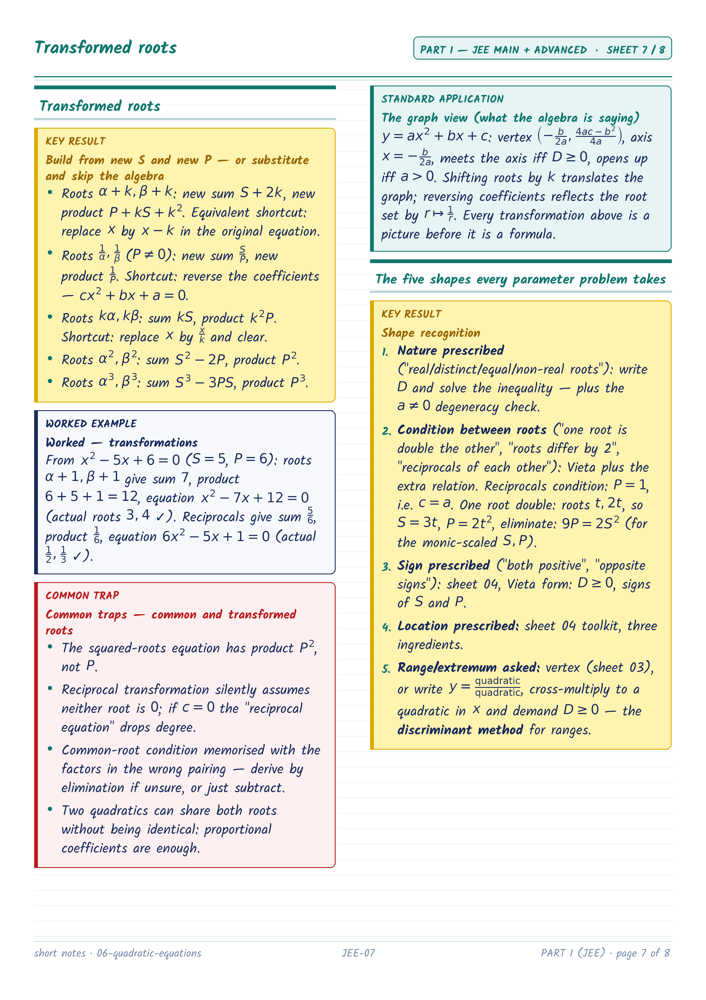
JEE-07 — Transformed roots
Common Roots and Transformed Equations — Putting Quadratics Together
Common Roots and Transformed Equations — Putting Quadratics Together

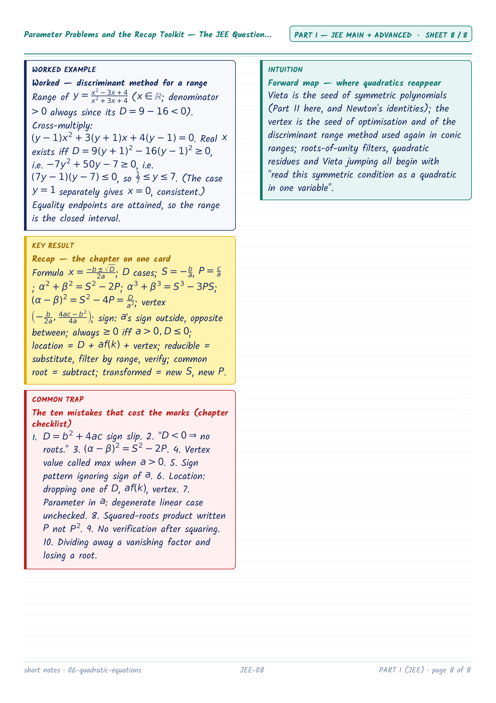
JEE-08 — Parameter Problems and the Recap Toolkit — The JEE Question Shapes (cont.)
Parameter Problems and the Recap Toolkit — The JEE Question Shapes
Parameter Problems and the Recap Toolkit — The JEE Question Shapes
Part II — Olympiad / Extensions (3 sheets)

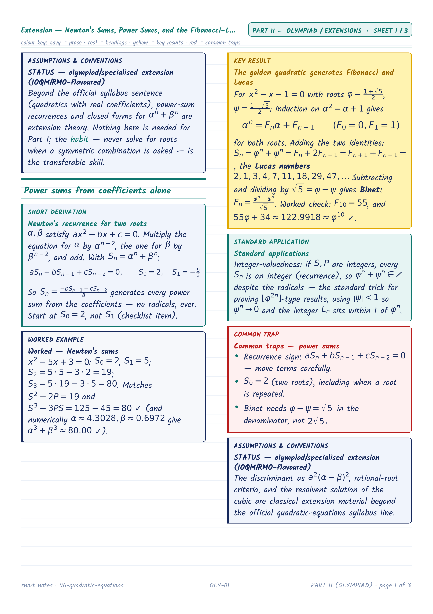
OLY-01 — Extension — Newton's Sums, Power Sums, and the Fibonacci–Lucas Machine
Extension — Newton's Sums, Power Sums, and the Fibonacci–Lucas Machine
Extension — Newton's Sums, Power Sums, and the Fibonacci–Lucas Machine

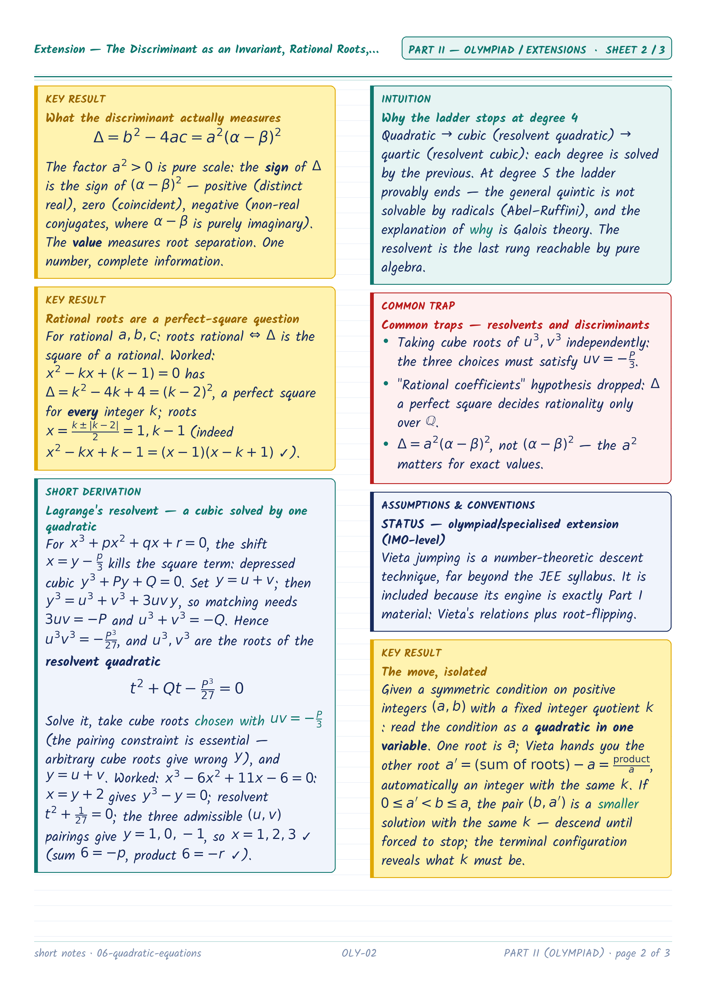
OLY-02 — Extension — The Discriminant as an Invariant, Rational Roots, and Solving Cubics by Quadratics (cont.)
Extension — The Discriminant as an Invariant, Rational Roots, and Solving Cubics by Quadratics
Extension — The Discriminant as an Invariant, Rational Roots, and Solving Cubics by Quadratics

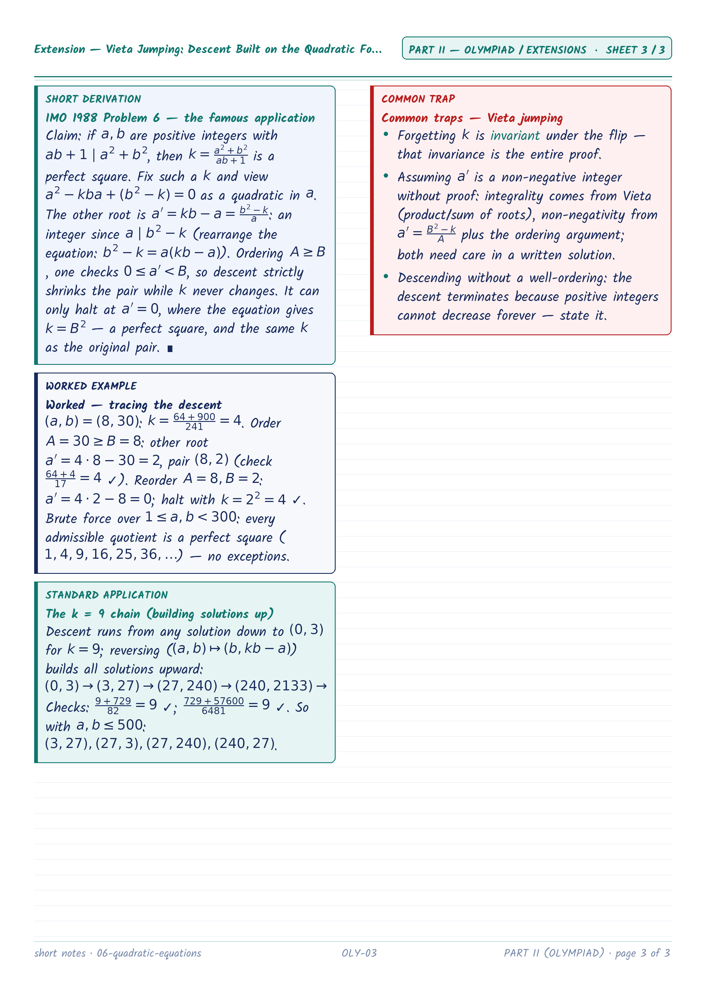
OLY-03 — Extension — Vieta Jumping: Descent Built on the Quadratic Formula (IMO 1988/6) (cont.)
Extension — Vieta Jumping: Descent Built on the Quadratic Formula (IMO 1988/6)
Extension — Vieta Jumping: Descent Built on the Quadratic Formula (IMO 1988/6)